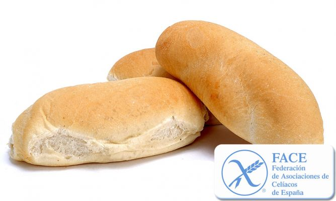

Pan celíaco
| Ingredientes | Cantidades |
|---|---|
| Harina anificable in gluten | 500 gr. |
| Agua templada | 300 ml. |
| Levadura en polvo | 10 gr. |
| Sal | 2 cucharaditas |
- Mezcla la harina panificable sin gluten, la levadura en polvo y la sal. Cuando esté mezclado, haz un hueco en el centro y echa el agua templada poco a poco, mezclando con el resto de ingredientes. Amasa todo bien hasta obtener una masa homogénea y sin grumos.
- Haz una bola con la masa, introdúcela en un bol, tápala con un trapo húmedo y deja fermentar durante 1 hora a temperatura ambiente (25-27ºC). Si no es posible conseguir esa temperatura ambiente, precalienta el horno a 50ºC durante 5 minutos y apágalo. Mete el molde con la masa en el horno apagado y deja fermentar.
- Cuando la masa ha doblado su volumen, amasa de nuevo de forma suave y dale la forma que desees. Se puede colocar la masa en un molde para pan, hacer varios panecillos, una barra grande.
- Coloca la masa con la forma deseada en una bandeja para horno cubierta con papel de horno, cúbrela con un trapo húmedo y deja fermentar durante 1 hora (sigue el mismo proceso anterior para fermentar).
- Una vez que ha levado por segunda vez, haz unos cortes en la parte superior y rocía la superficie con un poco de agua con un vaporizador. Introduce la masa de pan en el horno precalentado y coloca un vaso con agua en una esquina. Hornea el pan a 200ºC durante 45 minutos (horno arriba y abajo).
- El pan está hecho cuando al golpearlo en la base suena a hueco. Sácalo del horno y déjalo enfriar sobre una rejilla.
- Opcional: Puedes espolvorear un poco de harina sin gluten sobre el pan.